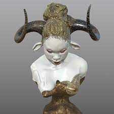

.jpeg)
.jpeg)
Emman Odufu’s article Auriea Harvey and the Future of Digital Sculpture is about Auriea Harvey, a sculptor living and working out of Rome. She specializes in virtual and tangible sculptures, drawings, and simulations that utilize a unique combination of digital and handmade productions such as AR, VR, and 3D printing. The article begins with how Harvey first became interested in coding and computers in general, walks through the journeys of her first few websites, and ends with her thoughts on Web3 and how digital art is viewed today.
Reading this article really opened my eyes to how much the internet has changed over only the past few years. I grew up during a time where the internet was already pretty developed, so I wasn’t aware of things such as how Web1 used to look like. I also wasn’t really aware of how digital art was viewed by artists in our world today, so to read that it is looked down upon and even criticized at times in the art world was surprising. Considering that I am entering this career field in a few years, I think that this is something that I definitely should have been aware of and will research further into when I have time.